| 海王 Aquaman(2018) |
 |
导演: 温子仁 |
豆瓣评分 |
| 编剧: 大卫・莱斯利・约翰逊・麦戈德里克/威尔・比尔/乔夫・琼斯/温子仁/莫尔特・魏辛格/保罗・诺里斯 |
8.0 193256人评价 |
| 主演: 杰森・莫玛/艾梅柏・希尔德/威廉・达福/帕特里克・威尔森/妮可・基德曼/更多... |
| 类型: 动作/奇幻/冒险 |
5星28.2% |
| 官方网站: www.aquanmanmovie.com |
4星45.5% |
| 制片国家/地区: 美国 / 澳大利亚 |
3星22.8% |
| 语言: 英语 |
2星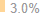 |
| 上映日期: 2018-12-07(中国大陆) / 2018-12-21(美国) |
1星 0.5% |
| 片长: 143分钟 |
──────────────────────── |
| 又名: 水行侠(港/台) / 潜水侠 / 水人 / 人鱼哥(豆友译名) |
好于 84% 奇幻片 |
| IMDb链接: tt1477834 |
好于 92% 动作片 |
|
|
| 海王的剧情简介 ・ ・ ・ ・ ・ ・ |
|
|
| 华纳兄弟影片公司与导演温子仁联手为您呈现波澜壮阔的动作冒险电影――《海王》！横跨七大洋的广阔海底世界徐徐展开，给观众带来震撼十足的视觉奇观。本片由杰森・莫玛领衔主演，讲述半人半亚特兰蒂斯血统的亚瑟・库瑞踏上永生难忘的征途――他不但需要直面自己的特殊身世，更不得不面对生而为王的考验：自己究竟能否配得上“海王”之名。 |
|
|
| 海王的演职员 ・ ・ ・ ・ ・ ・ (全部 83) |
|
|
|
 |
 |
 |
 |
温子仁
导演 |
杰森・莫玛
饰
海王/亚瑟・库瑞 |
艾梅柏・希尔德
饰 海后/湄拉 |
威廉・达福
饰 努迪斯・维科 |
帕特里克・威尔森
饰 奥姆王/海洋领主 |
|
|
| 海王的视频和图片 ・ ・ ・ ・ ・ ・ |
|
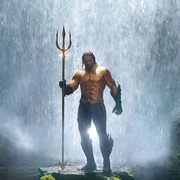 |
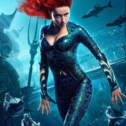 |
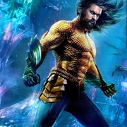 |
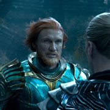 |
|
|
| 海王的获奖情况・ ・ ・ ・ ・ ・ |
| 第四届豆瓣电影年度榜单 最值得期待的外语电影（提名） |
|
|
| 喜欢这部电影的人也喜欢 ・ ・ ・ ・ ・ ・ |
|
|
| 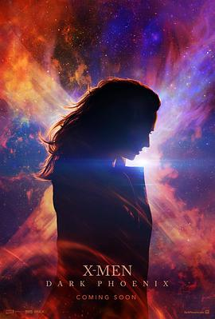 |
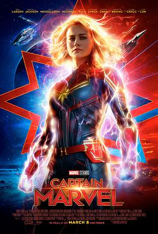 |
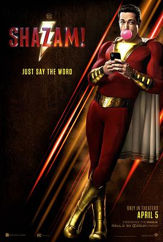 |
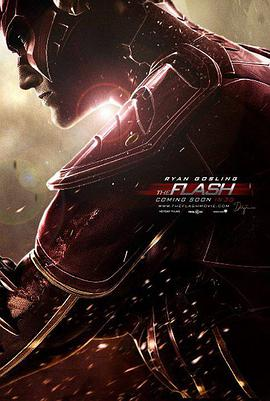 |
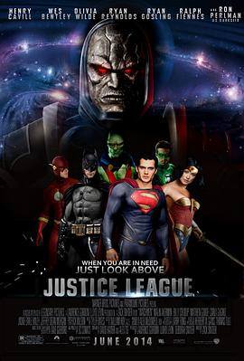 |
| X战警：黑凤凰 |
惊奇队长 |
雷霆沙赞！ |
闪电侠 |
正义联盟2 |
|
| 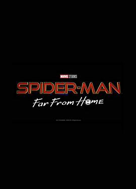 |
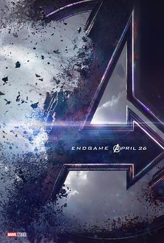 |
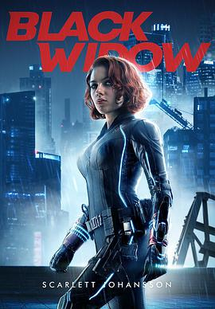 |
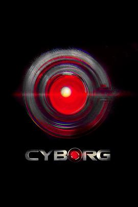 |
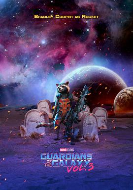 |
| 蜘蛛侠：英雄远征 |
复仇者联盟4：终局之战 |
黑寡妇 |
钢骨 |
银河护卫队3 |
|
|
| 海王的短评 ・ ・ ・ ・ ・ ・ |
|
| 热门 / 最新 / 好友 |
| 精美绝伦的水下世界，宏伟瑰丽的海底奇观，堪称“海底《阿凡达》，水下潘多拉”。 亚特兰蒂斯的史诗级战争气势磅礴，媲美《星球大战》和《指环王》。 动作戏登峰造极，拳拳到肉，让人再次感受《钢铁之躯》的震撼。 飞船追逐更是眼花缭乱，引人入胜，仿佛把《速度与激情》搬到了海底。 寻找三叉戟的探险之旅同样其乐无穷，妙趣横生，又是《夺宝奇兵》的再现。 影片核心又回归到对家庭的探索和对自我的肯定，承载着成长和母爱，... |
| 没有一些人吹的那么高，但足够精彩。温子仁没疯，他只是太会讲故事，太会知道如何调动观众的肾上腺素，无论是以前拍恐怖片、动作片，还是这次拍超级英雄片，什么时候该打斗，什么时候该落寞，什么时候该摆pose，什么时候该接吻，什么时候该逗比，他在这些已经程式化的东西中加入了自己的天马行空，于是我们跟随着海王和湄拉的脚步上天入地下海，从一个夺位权谋片生生变成了热血冒险片。不得不说这部的特效确实是目前能想到的最... |
瓦力 看过 2018-12-05 2018-12-05 |
| 还行，没吹得那么好，有点像强化娱乐性的海底版《黑豹》...故事线极其简单，打戏遍布扩成了143分钟的篇幅，对路人非常友好，不过这类过度炫目眼花缭乱的特效已经越看越麻木，什么海底《阿凡达》吹太过了，坐等《阿凡达2》的潘多拉海底世界吊打吧。 |
| 大型海底捞现场，建议带一双筷子去看，毕竟海王他们都备了叉子。超爱的任达华和徐锦江演两父子，港片一代江湖。基德曼又美又帅，为了视觉平衡，抱谁都拍半身为妙，身为仙女级吃货，143分钟只吃一条金鱼。大多角色都有村炮亮相瞬间，长发角色能多甩两回。好些场景很棒，每一个鸡皮疙瘩都是物证。不知为什么海盗可以给自己做盔甲，但他分不清蝠鲼跟苍蝇。湄拉最后一句台词，非常欢乐今宵。不归迪士尼管，却给匹诺曹打了不少广告。... |
| DC电影目前最佳，肌肉男就适合走中二路线，傻大个+毒舌美女的配置超赞，海后真美。雷神的世界体系+黑豹的故事，海王弟不如洛基萌，剧情比较无聊。温子仁也明白，所以动不动就用音效震你一跳，气氛张力是他的长项，海沟族那段好似恐怖片。特效炸裂，水下星战+指环王，奇观浩瀚，意大利跑酷最帅、结尾海怪大战年度最炫。PS，海王没变沙僧却成了孙悟空，龙宫寻宝，把三叉戟当金箍棒用。穿上盔甲就是玉米侠，或者海王金樽。单彩... |
|